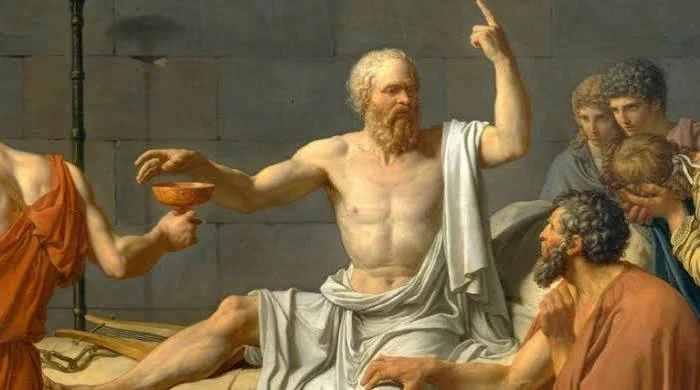

Sócrates
c. 470 a.C. – 399 a.C. · Atenas, Grécia
Filosofia Socrática / Método Dialético
"Só sei que nada sei."
— Sócrates
Biografia
Filho de um escultor e de uma parteira, Sócrates viveu em Atenas durante seu período de maior esplendor cultural e político, tendo servido como soldado de infantaria (hoplita) em campanhas militares antes de se dedicar inteiramente à filosofia. Diferente dos pensadores anteriores, que se ocupavam sobretudo da natureza física do cosmos, Sócrates deslocou o centro da investigação filosófica para as questões éticas: o que é a virtude, a justiça, a coragem, o bem viver.
Sócrates não escreveu nenhuma obra; tudo o que sabemos sobre seu pensamento vem de relatos de discípulos, sobretudo dos diálogos de Platão e das memórias de Xenofonte, o que torna difícil separar com precisão as ideias do próprio Sócrates das elaborações posteriores de Platão. Ficou famoso por seu método de investigação através de perguntas e respostas — o chamado método socrático ou elenchos —, através do qual expunha as contradições e incertezas escondidas nas opiniões supostamente seguras de seus interlocutores.
Em 399 a.C., foi julgado e condenado à morte em Atenas, acusado de corromper a juventude e de não reconhecer os deuses da cidade. Recusando-se a fugir, apesar de ter tido a oportunidade, Sócrates aceitou a sentença e morreu bebendo cicuta, cercado de discípulos, em uma cena imortalizada por Platão no diálogo 'Fédon'.
Principais Ideias
- O método socrático (elenchos): refutação dialética através de perguntas
- A maiêutica: ajudar o interlocutor a 'dar à luz' suas próprias ideias
- O intelectualismo moral: a virtude é uma forma de conhecimento
- A ironia socrática: fingir ignorância para revelar contradições alheias
- 'Conhece-te a ti mesmo' como princípio fundamental de sabedoria
- A prioridade da ética sobre a especulação física da natureza
Legado
Sócrates é considerado o marco fundador da filosofia moral ocidental e do próprio ideal do exame crítico da vida ('uma vida não examinada não vale a pena ser vivida'). Sua execução e sua postura diante da morte tornaram-se símbolos duradouros da integridade filosófica, e seu método de questionamento influenciou diretamente Platão e, através dele, toda a tradição filosófica ocidental.